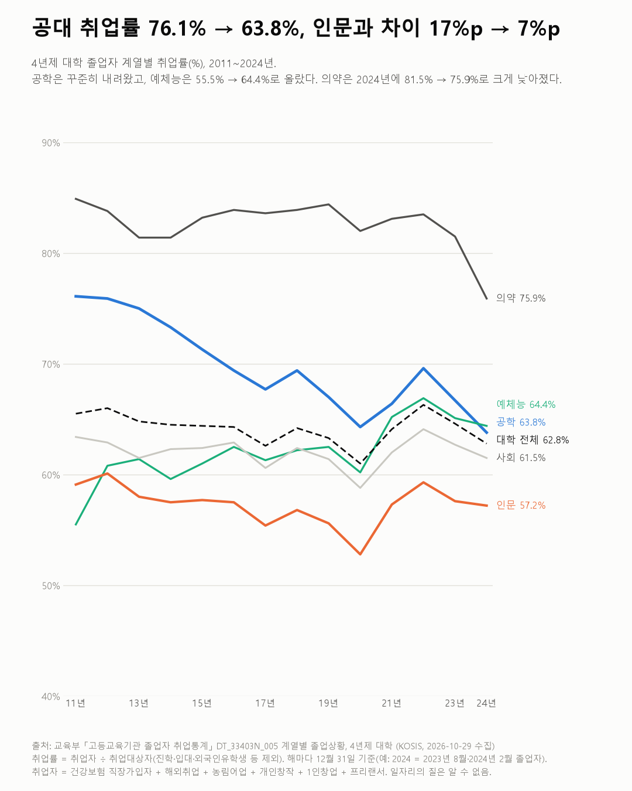
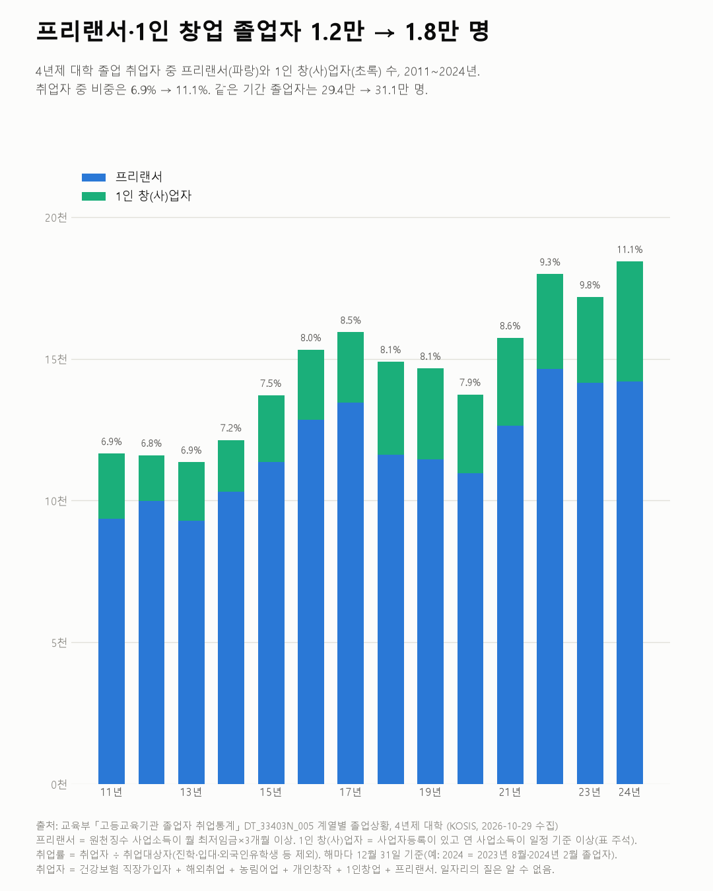

공대 취업률 76.1% → 63.8%, 인문과 차이 17%p → 7%p
졸업자 취업통계 2011~2024

질문
4년제 대학 졸업자의 취업률은 계열별로 얼마나 다르고, 2011년부터 2024년까지 어떻게 바뀌었나? 프리랜서·1인 창업으로 잡힌 졸업자는 얼마나 되나?
사용 데이터와 출처
| 데이터 | 출처 | 쓰임 |
|---|---|---|
| 계열별 졸업상황 (KOSIS DT_33403N_005) | 교육부 「고등교육기관 졸업자 취업통계」 | 4년제 대학 계열 7개의 졸업자·취업자·취업률·프리랜서·1인창업, 2011~2024년 |
- 취업률 = 취업자 ÷ 취업대상자 × 100. 취업대상자 = 졸업자 − (진학자 + 입대자 + 취업불가능자 + 제외인정자 + 외국인유학생).
- 취업자 = 건강보험 직장가입자 + 해외취업자 + 농림어업종사자 + 개인창작활동종사자 + 1인 창(사)업자 + 프리랜서. 해마다 12월 31일 하루 기준이다(예: 2024 = 2023년 8월·2024년 2월 졸업자).
- 2023년부터 조사 대상이 넓어졌다(방송통신대·사이버대 등). 영향을 피하려고 4년제 '대학'만 썼다.
- 검증: 모든 해·계열에서 취업자 = 하위 유형 합(차이 0)을 확인했다.
- 교차 확인: 2024년 일반대학 취업률 62.8%는 보도(2025년 12월 발표)와 같다.
- 수집일: 2026-10-29 (KOSIS 오픈API).
인사이트
1. 공학계열 취업률은 2011년 76.1%에서 2024년 63.8%로 내려갔다. 2022년 69.6%로 잠시 올랐다가 2년 연속 내려갔다.
2. 인문계열과의 차이가 줄었다. 공학 − 인문은 17%p(2011)에서 7%p(2024)가 됐다. 인문은 59.1% → 57.2%로 큰 변화가 없다.
3. 예체능은 55.5%에서 64.4%로 올라 공학보다 높아졌다(2024년). 교육계열은 53.4% → 53.7%로 비슷하다.
4. 의약계열은 2024년에 81.5%에서 75.9%로 크게 낮아졌다. 2011~2023년에는 81~85%였다.
5. 프리랜서와 1인 창업으로 잡힌 졸업자는 1.2만 명(2011)에서 1.8만 명(2024)이 됐다. 취업자 중 비중은 6.9% → 11.1%다. 프리랜서 9,367명 → 14,209명, 1인 창(사)업자 2,291명 → 4,226명이다.

한계
이 데이터로 말할 수 없는 것
- 12월 31일 하루 기준이다. 그 뒤의 취업·이직은 모른다. 임금, 정규직 여부 등 일자리의 질도 알 수 없다.
- 계열 차이에는 학생 구성 차이가 섞여 있다. 어느 계열이 낫다는 뜻이 아니다.
- 의약계열 2024년 하락의 원인은 이 데이터로 알 수 없다.
- 프리랜서·1인 창업은 소득 기준을 넘은 사람만이다. 프리랜서는 원천징수 사업소득이 월 최저임금×3개월 이상, 1인 창(사)업자는 사업자등록이 있고 연 사업소득이 일정 기준 이상인 경우다.
- 계열 분류는 2011~2021년 한국교육개발원 학과분류 기준이다. 그 뒤 분류 변경 여부는 확인하지 못했다.
전제 기록
데이터를 보기 전에 적어둔 것, 그리고 보고 나서 바꾼 것
- 전제 기록(premises)(데이터를 받기 전에 작성)를 따랐다. 받기 전에 표 주석에서 취업률 정의와 2023년 조사 대상 확대를 확인하고 4년제 대학만 쓰기로 했다.
- 차트 각주에서 확인 안 된 문장('직장인 부업은 직장가입자로 잡힘')을 빼고 표 주석의 정의로 바꿨다.